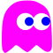
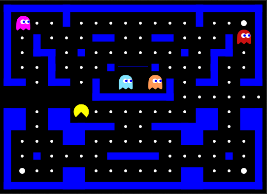
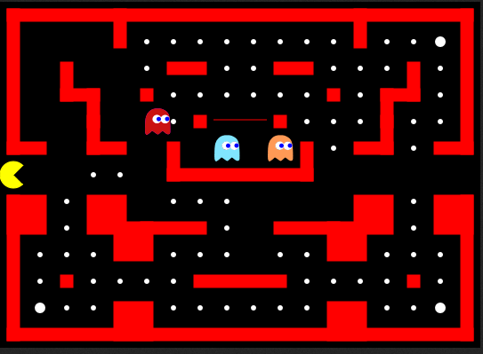
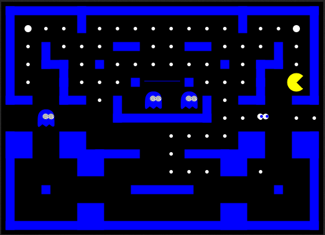

Najlepšie skóre
Pohybuj sa šípkami alebo klávesmi W, A, S, D.
Hru pozastavíš a obnovíš medzerníkom, klávesom ESC alebo kliknutím na hernú plochu.
Na pohyb používaj potiahnutie prstom alebo smerové tlačidlá pod hrou.
Dotykom hernej plochy hru pozastavíš alebo obnovíš.
Duchovia ťa prenasledujú. Každý má vlastnú stratégiu.
Inky opustí domček po zjedení aspoň 30 bodiek. Jeho domov je v pravom dolnom rohu.
Blinky je najagresívnejší duch. Prenasleduje ťa od začiatku a mieri priamo na teba.

Pinky sa pokúša predvídať tvoj pohyb a nadbehnúť ti.
Clyde opustí domček po zjedení približne dvoch tretín bodiek. Jeho domov je v ľavom dolnom rohu.
Duchovia sa pohybujú smerom do svojich rohov.

Po určitom čase začnú duchovia aktívne prenasledovať hráča. Steny bludiska zmenia farbu.

Cieľom je pozbierať všetky bodky a vyhnúť sa duchom. Každá bodka má hodnotu 10 bodov.
V každej úrovni sú štyri väčšie bodky. Po ich zjedení môžeš dočasne chytať duchov. Každá má hodnotu 50 bodov.

Za chytenie ducha získaš 100 bodov. Duch sa následne vráti do svojho domčeka.
Use the arrow keys or W, A, S, D to move.
Press SPACE, ESC or click the game area to pause or resume.
Swipe or use the directional buttons below the game area.
Touch the game area to pause or resume.
Ghosts chase the player. Each ghost has its own strategy.
Inky leaves the ghost house after at least 30 dots have been eaten. His home corner is bottom right.
Blinky is the most aggressive ghost. He starts chasing immediately and aims directly at you.
Pinky tries to predict your movement and intercept you.
Clyde leaves the ghost house after roughly two thirds of the dots have been eaten. His home corner is bottom left.
Ghosts move towards their home corners.
After a while, ghosts actively chase the player and the maze walls change color.
Collect all dots while avoiding the ghosts. Each dot is worth 10 points.
Each level contains four larger dots. Eating one temporarily lets you catch ghosts. Each is worth 50 points.
Catching a ghost awards 100 points. The ghost then returns to its house.
Verzia: iBasterisk Edition 1.0
Version: iBasterisk Edition 1.0
(__)
(oo)
/------\/
/ | ||
* /\---/\
~~ ~~
apt-get moo 🐄
Written by iBasterisk
Hra vychádza z open-source projektu pacman-canvas.
Based on the open-source pacman-canvas project.
Klikni pre štart
This whole thing was written in HTML5, CSS3 and Javascript (using small bits of jquery). For the basics I was following the "Exploring HTML5 Canvas" Tutorials (Part 1 - 6) by Devhammer. Thanks for the great Tutorial!
For some other stuff, like how to write objectorientated javascript I was following the tutorials over at http://www.codecademy.com/, which is a really great site to learn Javascript and also other languages.
If you understand German you can also read my blogpost about this site: "Pacman in HTML5 Canvas".